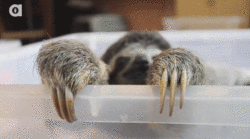

Sloth Snuggling Advocates

Meet cute sloths in your area:
How to cuddle a sloth:
- Locate the nearest sloth to you.
- Travel to the location of said sloth.
- Approach sloth with caution, optimisim, and a friendly demeanor.
- Appease sloth with pets and scratches.
- Embrace sloth and cuddle.